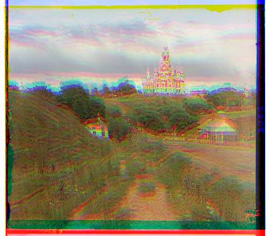
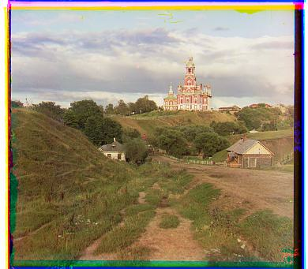
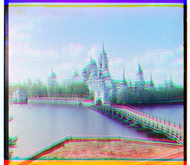
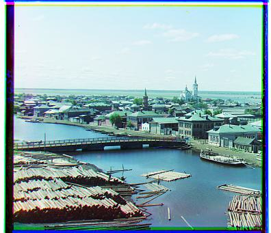

Project Description
The goal of this project was to reconstruct color photographs from digitized RGB glass plate negatives taken by Sergei Mikhailovich Prokudin-Gorskii. Each glass plate contains three vertical grayscale exposures captured through blue, green, and red filters (in BGR order from top to bottom). By extracting these channel plates, determining the optimal spatial displacement offsets, and stacking them together, we automatically produce high-quality color images capturing early 20th-century Russia.
Single-Scale Implementation (JPEG)
The initial approach uses a single-scale exhaustive search to align the Green and Red channels against the fixed Blue base channel. For each channel, every displacement vector within a bounded search window of [-15, 15] pixels in both $x$ and $y$ directions is tested using np.roll.
Alignment quality is evaluated using Normalized Cross-Correlation (NCC), computed by vectorizing the channel slices and normalizing by their mean and standard deviation:
To prevent scanning artifacts, dark borders, and frame edges from skewing the score, a 15% margin around the outer edges is cropped before calculating NCC. The offset yielding the highest NCC score is selected to stack the channels back into an aligned RGB image. While this approach effectively aligns low-resolution JPEG images, searching a ±15 pixel window is insufficient for high-resolution TIFF files and scaling up the window size becomes computationally prohibitive.
Cathedral


Monastery


Tobolsk

Multi-Scale Pyramid Alignment (TIFF)
For high-resolution TIFF images, exhaustive searching is computationally expensive. For these larger, high-resolution .tif images, I implemented the multi-scale pyramid alignment, as it ensures a faster, more efficient, and reliable search. The reason for using this method is that this strategy downsamples the image into a pyramid, aligning at the places where displacements are small relative to image size, and then refining as I move back up to higher resolutions.
Additional Results
Exploration of automated features including Sobel edge detection alignment, automatic contrast scaling, white balance adjustment, and edge border cropping.